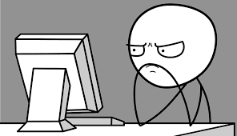

Bem-vindo!
Meu nome é Rafael Willian Batista Negri, seja bem-vindo ao meu portfólio individual. Nesse trabalho irei lhe apresentar alguns interesses pessoais, permitindo que conheça melhor alguns interesses meus, principalmente quanto a filmes e jogos.
Nesse sentido, inclui alguns tópicos desse site para dedicar a explicar alguns dos meus interesses. Portanto, decidi por apresentar meus filmes favoritos, assim como os jogos que marcaram minha infância e adolescência.
Logo, você pode saber mais sobre mim clicando em um botões que estão na parte superior da sua tela. O botão FILMES irá o direcionar para uma aba onde encontrará meus filmes favoritos. Ja o botão JOGOS o levará para uma aba onde mostro meus jogos favoritos. Fique a vontade para conhecer mais sobre mim!

O botão CONTATO permitirá que você envie um formulário de contato para interagir comigo. Envie também, se desejar, sugestões que possam melhorar meu site. Por fim, mas não menos importante. Clique no botão SOBRE para acessar meu link no GitHub. Espero que aproveite!